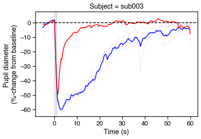

PIPR preprocessing pipeline¶
What follows is an example pipeline for preprocessing PIPR data with tools from pyplr.utils and pyplr.preproc. The data were collected from three subjects using this protocol.
[15]:
import os.path as op
import pandas as pd
import matplotlib.pyplot as plt
import seaborn as sns
sns.set_context('notebook', font_scale=1.2)
from pyplr import graphing, utils, preproc
from pyplr.plr import PLR
# Some useful constants
SAMPLE_RATE = 120
DURATION = 7800
ONSET_IDX = 600
# Columns to load
use_cols = ['confidence',
'method',
'pupil_timestamp',
'eye_id',
'diameter_3d',
'diameter']
# Pupil Labs recording directories / exports
subjects = {
'001': [r'/Users/jtm/Projects/PyPlr/examples/PIPR/data/sub001', '000'],
'002': [r'/Users/jtm/Projects/PyPlr/examples/PIPR/data/sub002', '001'],
'003': [r'/Users/jtm/Projects/PyPlr/examples/PIPR/data/sub003', '000']
}
# Empty DataFrame to store processed PIPR data
df = pd.DataFrame()
# Loop over subjects
for k in subjects.keys():
# Get a handle on a subject
rec = subjects[k][0]
export = subjects[k][1]
s = utils.new_subject(
rec, export=export, out_dir_nm='pyplr_analysis')
# Load pupil data
samples = utils.load_pupil(
s['data_dir'], eye_id='best', method='3d', cols=use_cols)
# Pupil columns to analyse
pupil_cols = ['diameter_3d', 'diameter']
# Make figure for processing
f, axs = graphing.pupil_preprocessing(nrows=5, subject=k)
# Plot the raw data
samples[pupil_cols].plot(title='Raw', ax=axs[0], legend=True)
axs[0].legend(loc='center right', labels=['mm', 'pixels'])
# Mask first derivative threshold
samples = preproc.mask_pupil_first_derivative(
samples, threshold=3.0, mask_cols=pupil_cols)
samples[pupil_cols].plot(
title='Masked 1st deriv (3*SD)', ax=axs[1], legend=False)
# Mask confidence threshold
samples = preproc.mask_pupil_confidence(
samples, threshold=0.99, mask_cols=pupil_cols)
samples[pupil_cols].plot(
title='Masked confidence (<0.99)', ax=axs[2], legend=False)
# Interpolate
samples = preproc.interpolate_pupil(
samples, interp_cols=pupil_cols)
samples[pupil_cols].plot(
title='Linear interpolation', ax=axs[3], legend=False)
# Smooth with Butterworth filter
samples = preproc.butterworth_series(
samples, fields=pupil_cols, filt_order=3,
cutoff_freq=4/(SAMPLE_RATE/2))
samples[pupil_cols].plot(
title='3rd order Butterworth filter with 4 Hz cut-off',
ax=axs[4], legend=False)
# Load events
events = utils.load_annotations(s['data_dir'])
# Extract the event ranges
ranges = utils.extract(
samples,
events,
offset=-ONSET_IDX,
duration=DURATION,
borrow_attributes=['color'])
# Calculate baselines
baselines = ranges.loc[:, range(0, ONSET_IDX), :].mean(level=0)
# New columns for percent signal change
ranges = preproc.percent_signal_change(
ranges, baselines, pupil_cols)
# Add to DataFrame
ranges['Subject'] = k
df = df.append(ranges)
# Convert samples index-level to time (s)
new_onset = (ranges.index.get_level_values('onset')
.unique()
- ONSET_IDX) / SAMPLE_RATE
ranges.index = ranges.index.set_levels(
levels=new_onset, level='onset')
ranges.to_csv(op.join(s['out_dir'], 'ranges.csv'))
# Plot PIPRs
fig, ax = plt.subplots(figsize=(6,4))
for r in range(6):
c = ranges.loc[r, 'color'][0]
ranges.loc[r, 'diameter_pc'].plot(
color=c, lw='.1', ax=ax, legend=False)
# Now show the means
avgs = (ranges.reset_index()
.groupby(['color','onset'], as_index=False)
.mean())
sns.lineplot(data=avgs, x='onset', y='diameter_pc', hue='color',
palette={'blue':'b','red':'r'}, legend=False)
# Tweak figures
ax.axvspan(0, 1, color='k', alpha=.1)
ax.axhline(0, 0, 1, color='k', ls='--')
ax.set_xlabel('Time (s)')
ax.set_ylabel('Pupil diameter \n(%-change from baseline)')
ax.set_title('Subject = {}'.format(s['id']))
# Save
fig.savefig('../img/PIPR_{}.svg'.format(s['id']))
# Save Processed PIPR data
df.to_csv('processed_PIPR.csv')
************************************************************
************************** sub001 **************************
************************************************************
Loaded 94406 samples
Loaded 6 events
Extracted ranges for 6 events
************************************************************
************************** sub002 **************************
************************************************************
Loaded 95307 samples
Loaded 6 events
Extracted ranges for 6 events
************************************************************
************************** sub003 **************************
************************************************************
Loaded 117246 samples
Loaded 6 events
Extracted ranges for 6 events
